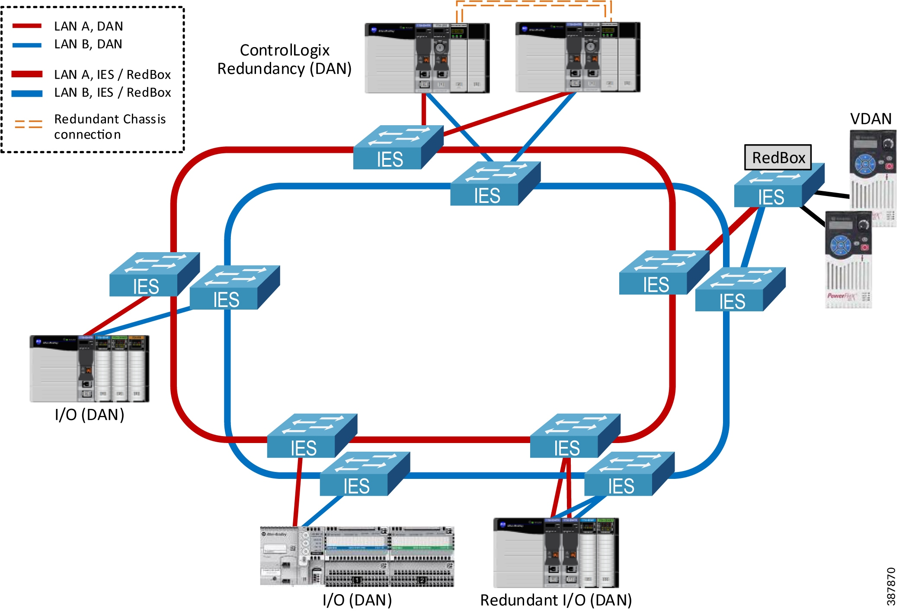
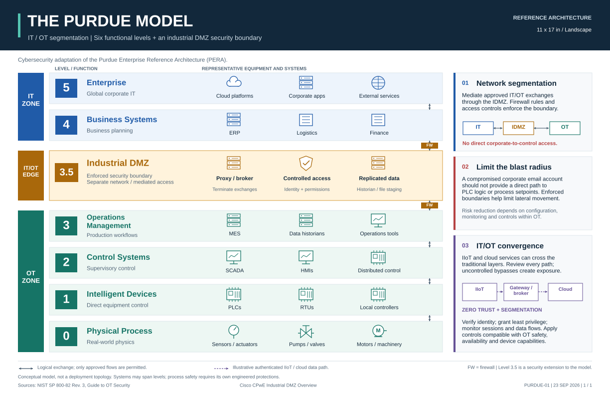

{kind=link}
{kind=link}
{kind=link}
BUSINESS IT · LEVELS 4–5
Run the business
Business applications, email, identity services, servers, and connections to the internet and cloud.
Holly Springs, NC · Serving North Carolina
We plan, install, troubleshoot, and document networks—from office Wi-Fi to industrial switches and the copper and fiber links across your plant.

Choose a service to see the scope and deliverables.
Resolve connection problems or plan an equipment change.
Reviews, troubleshooting & agreed improvements 02Connect equipment, upgrade infrastructure, or investigate communication faults.
Switches, copper & fiber links, cabinets & redundant paths 03Help your team trace connections and maintain the network.
Network diagrams, cabinet layouts & cable recordsAlso available: AI assessments and automation and business website development.
Share the problem, systems involved, location, and timing. We confirm fit and next steps.
Agree on the work, deliverables, cost, and schedule before starting.
We follow the agreed scope and discuss any changes to cost or timing with you.
Review results, receive the agreed records, and identify outstanding issues.
Start with an investigation or discuss implementation. Your quote makes clear what is included and what needs your approval.
Explore the owner’s previous work in manufacturing IT, industrial networks, and business systems, alongside an illustrative documentation sample.
THE FULL IT/OT PICTURE
IT supports business systems. OT supports production equipment.
The model spans enterprise applications at Level 5 through the physical process at Level 0. An industrial DMZ at Level 3.5 controls connections between business and plant networks.

See the IT/OT network topology and documentation example →
Free downloads on GitHub. For more infrastructure detail, view the CPwE reference architecture from Cisco, Panduit, and Rockwell Automation’s February 2023 guide.
BUSINESS IT · LEVELS 4–5
Business applications, email, identity services, servers, and connections to the internet and cloud.
IT/OT BOUNDARY · LEVEL 3.5
An industrial DMZ controls permitted services and traffic between business and plant networks.
SITE OPERATIONS · LEVEL 3
Plant applications, servers, and network infrastructure connect production areas and operational information.
MACHINES & PROCESSES · LEVELS 0–2
Controllers, operator screens, sensors, drives, and switches serve machines and production lines.
Choose the part of your operation that needs attention:
For IT/OT boundary connections, we coordinate requirements and responsibilities with your IT team, controls staff, and equipment vendors.
Discuss the systems you need connectedWorking around production
Before agreeing to network changes, we review the production schedule, affected systems, and people who need to be involved.
Review equipment locations, cable distances, environmental exposure, and maintenance access.
Agree on contacts, access requirements, and work windows with maintenance, IT, and equipment vendors.
Define checks and a way to restore the previous setup if they fail.
Update agreed drawings, labels, and connection records, including test results and unresolved issues.
The owner’s previous work includes Cisco Catalyst and Stratix networks, equipment connectivity, and support for industrial testing and commissioning.
AI & Automation
Could your team find maintenance procedures faster or spend less time preparing reports? Start with one task to assess.
Explore AI servicesCompare suitable tools, privacy requirements, running costs, and hardware needs.
Test usefulness and accuracy, identify mistakes, and define where human review is needed.
Describe the problem, the equipment or software involved, your city, and your preferred timing. A short summary is enough for the first inquiry.
Your choice starts the inquiry message. You can edit it in the form.
Or email hello@itotexpress.com
The short form opens on Zoho Forms and includes a link back to IT/OT Express. Please keep passwords, access codes, and confidential system records out of your first message.